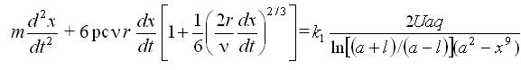
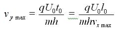

Электрофотографические настольные принтеры применяются в полиграфии в составе издательских систем на базе ПЭВМ для выпуска бланочной и другой продукции методом репродуцированного оригинала-макета, а также для получения корректурных отпечатков полос изданий, а также для работы технического и художественного редакторов и корректорской читки.
При изготовлении корректурных отпечатков достаточно иметь принтер с разрешением 300-600 dpi, а для изготовления репродуцируемого оригинала-макета желательно использовать принтер с разрешением 600-1200 dpi или выше. Необходимо знать, что многие модели принтеров имеют так называемое алгоритмическое или "несимметричное" разрешение.
В этом случае фактическое разрешение, обеспечивающееся перемещением лазерного луча, составляет 1200 dpi (рис. 53), а фактическое разрешение по цилиндру равно 600 dpi. Воспроизводимое растрированное изображение при этом имеет не квадратную, а прямоугольную структуру, а луч лазера способен поставить растровую точку либо в верхней, либо в нижней части прямоугольника. В этом случае говорят об алгоритмическом разрешении 1200 dpi. Как видно из рисунка, высокое алгоритмическое разрешение лишь позволяет сделать края изображения более гладкими, но не черный цвет хорошего качества.
Другая распространенная технология повышения разрешения состоит в уменьшении вращения электрофотографического цилиндра до такой скорости, чтобы обеспечить по вертикали удвоение числа линий сканирования и тем самым получить разрешающую способность, равную 1200 x 1200 dpi.
Лазерный принтер для печати на листовой бумаге (рис. 54) состоит из полупроводникового лазера 10, работающего в импульсном режиме в инфракрасной области спектра и формирующего луч, который разворачивается непрерывно вращающимся многогранным металлическим дефлектором 12.

Фокусирующая и компенсаторные линзы объектива 11 фокусируют пучок света, который, отразившись от зеркала 9, попадает на поверхность электрофотографического цилиндра 7.
Электрофотографический цилиндр с нанесенным на его металлическую, обычно алюминиевую поверхность тонким фотополупроводниковым слоем предварительно заряжается с помощью устройства 8, называемого коротроном и тем самым приобретает светочувствительность.
В силу последнего обстоятельства пучок света лазера 10 формирует на электрофотографическом цилиндре скрытое изображение. Проявление его выполняется однокомпонентным проявителем в устройстве 13. После проявления заряженное изображение переносится электростатическим полем, сформированным электризатором 15, на бумагу. По окончании процесса переноса изображения на обратной стороне бумаги остается заряд, воздействие которого может привести к застреванию бумаги в принтере. Чтобы этого не произошло, в конструкциях принтеров предусмотрены специальные механические пальцы отделения бумаги или коротроны отделения, создающие заряд противоположной полярности к коротрону переноса, но меньшей величины, чтобы часть заряда от коротрона переноса сохранилась и удерживала тонарное изображение на бумаге вплоть до его закрепления термосиловым методом в устройстве 3.
Вышеописанные узлы зарядки 8, проявления 10, а также узел очистки 4 с ракелем, предназначенный для очистки электрофотографического слоя от остатков тонера, конструктивно объединены в сменной кассете 5, называемой картриджем. Такое конструктивное решение значительно упрощает ремонт и обслуживание оборудования.
Вывод отпечатанных листов с принтера осуществляется системой валиков 3 на приемный лоток 2.
В большинстве принтеров подача листов бумаги осуществляется с помощью фрикционного устройства самонаклада из лотка 14.
В качестве устройств цифровой цветопробы используются цветные электрофотографические принтеры. В них, как и в черно-белых, используется лазер или линейка светодиодов.
Конструкция цветных принтеров базируется на технологии получения цветного изображения электрофотографическим методом и конструктивно подразделяется на одноцилиндровые или двухцилиндровые.
Схема одноцилиндрового варианта приведена на рис. 55, а.
Одноцилиндровый вариант - это накопление цветного изображения непосредственно на электрофотографическом цилиндре в результате последовательного цветоделенного экспонирования и четырехкратного (включая черный цвет) проявления цветами триады. Полученное цветное изображение переносится непосредственно на бумагу и закрепляется.
Двухцилиндровый вариант (рис. 55, б) и его модификации с автоматически сменяемыми узлами проявления, как правило, применяются в лазерных принтерах. По этому варианту изображение многократно экспонируется и проявляется на цилиндре и каждый раз переносится на бумагу, удерживаемую на другом цилиндре - цилиндре переноса. Только после завершения процесса накопления цветного изображения бумажный лист освобождается и транспортируется в зону закрепления, где порошковое изображение закрепляется.
Струйная печать - это процесс регистрации информации, осуществляемый каплями чернил, вылетающими из сопла с высокой скоростью, обеспечивающей достижение поверхности, на которой и регистрируется информация.
Струйная печать классифицируется по способу нанесения изображения и подразделяется на непрерывную и импульсную. Импульсная струйная печать, в свою очередь, подразделяется на пьезоэлектрическую, пузырьковую и печать твердыми чернилами.
Струйная печать имеет некоторые недостатки. Так, например, до сих пор существует зависимость качества печати от вида бумаги. Пористая, рыхлая бумага приводит к расплыванию чернил, в результате чего линии и контуры теряют четкость. Недостатком струйной печати также является неоднородность размеров сопел и соответственно изменение размера капель и скорости их полета, что заметно сказывается на качестве. Еще один эффект, который способен снизить качество печати - это появление капель-"спутников", которые неуправляемы и попадают в ненужное место на бумаге. Кроме того, изображения, созданные методом струйной печати, имеют два существенных недостатка: "водобоязнь" и склонность к выцветанию.
Достоинство струйной печати по сравнению с электрофотографическим способом - это низкая стоимость цветного отпечатка, полученного на струйном принтере при практически одинаковом качестве.
Для получения высококачественного изображения выпускаются принтеры с физическим разрешением 1440 x 720, 1200 x 1200, 2880 x 720, 2400 x 1200 dpi. Последние два значения разрешения обеспечиваются за счет двойного прохода печатающей головки принтера.
Непрерывную струйную печать более правильно называть каплеструйной, потому что струя чернил не является сплошной, а состоит из множества микроскопических капель.

В каплеструйном принтере (рис. 56) печатающая головка образует непрерывную капельную струю чернил, выбрасываемую под давлением за счет наложения на нее колебаний, получаемых с помощью, например, пьезоэлектрического генератора капель. Под действием переменного электрического напряжения кристалл пьезоэлектрика изменяет свой объем и выталкивает каплю из головки. Чернила под давлением постоянно подаются в печатающую головку из резервуара с помощью насоса. Для получения чернил определенной вязкости этот резервуар соединен с резервуаром растворителя.
С помощью ускоряющего электрода, охватывающего выход из сопла, вылетающие капли приобретают электрический заряд. Таким способом может выбрасываться до миллиона капель в секунду. Их размеры зависят от геометрии сопел-распылителей и могут составлять всего лишь несколько микрон, а скорость, с которой они долетают до бумаги, достигает 40 м/с.
Уравнение движения заряженной капли по направлению к бумажному листу (рис. 57) в промежутке от сопла до ускоряющего электрода определяется уравнением
 |
(6) |
где m - масса капли;
F1 - кулоновская сила притяжения капли к ускоряющему электроду;
F2 - сила сопротивления воздуха.

Подставляя в выражение (6) значения действующих сил, получим
|  |
(7) |
где - плотность и кинетический момент вязкости среды;
r - радиус капли;
k 1- некоторый коэффициент;
q - заряд капли;
U - разность потенциалов между соплом и электродом;
l - расстояние от среза сопла до ускоряющего электрода.
Решение уравнения (7) позволяет найти изменение скорости капли в зависимости от приложенного напряжения.
Далее капли пролетают через отклоняющую систему, которая создает электрическое поле высокого напряжения. Так как они имеют заряд, то под действием электрического поля изменяют свою траекторию.
Отклонение капли в направлении, перпендикулярном оси ОХ, возникает за счет подачи напряжения на отклоняющие электроды, а уравнение движения капли при этом имеет следующий вид
 |
(8) |
где U - отклоняющее напряжение;
h - расстояние между электродами.
На участке от отклоняющих электродов до бумаги уравнение движения капли будет иметь вид:
 |
(9) |
так как отклоняющее напряжение на этом участке не воздействует на каплю.
Суммарное отклонение капли на двух участках будет равно
| (10) |
где y1 - отклонение капли от ускоряющего электрода до конца отклоняющих электродов;
y2 - отклонение капли на участке от конца отклоняющего электрода до бумаги.
Если пренебречь сопротивлением воздуха, то уравнение (8) можно записать в виде:
 |
(11) |
Решая уравнение (11), получим
|
(12) |
где l0 - длина отклоняющих электродов; vx max - максимальная линейная скорость капли в направлении оси ОХ, равная
 |
(13) |
Вторая составляющая отклонения капли определяется формулой
| (14) |
где
|  |
(15) |
Таким образом, максимальное отклонение капли будет равно
| (16) |
Генератор изображения управляет направлением полета капель. Они попадают либо на бумагу в нужном месте, либо в уловитель и оттуда в резервуар чернил для повторного использования.
Основное достоинство струйных принтеров с непрерывной печатью - это возможность получать цветное изображение высокого качества. На нем совершенно неразличимы глазом точки, из которых оно сформировано.
В отличие от струйнокапельной печати струйные принтеры импульсной печати "выстреливают" чернила только когда получают сигнал, т. е. это печать "по требованию".
В печатающих головках импульсного типа капельный генератор выполнен в виде небольшой камеры, расположенной рядом с соплом. В камере в нужный момент создается избыточное давление, выталкивающее из камеры каплю чернил, которая и попадает на бумагу. Так, капля за каплей, точка за точкой формируется изображение.
В капельных генераторах импульсных принтеров избыточное давление создается либо при помощи кристалла пьезоэлектрика, действующего как микропоршень на стенку камеры, либо за счет сильного теплового импульса, под действием которого образуется пузырек мгновенно испарившихся в камере чернил. Такие камеры некоторыми авторами называются пузырьково-струйными распылителями.
Конструктивно пьезоэлектрические капельные генераторы выполнены в виде пьезотрубок "Siemens" или структурированных стеклянных пластинок с закрепленными на них небольшими пьезопластинками "Epson", а также в виде ламеля-пластинчатого пьезопреобразователя "Dataproducts", "Epson".
Пластинчатые пьезопреобразователи сочетают в себе преимущества как плоских, так и трубчатых систем высокую частоту распыления и компактную конструкцию.
Несмотря на конструктивное разнообразие, все печатающие головки с пьезопреобразователями работают по одному принципу, избыточное давление в камере с чернилами создается с помощью пьезоэлемента, который изменяет свои размеры - выгибается при подведении к нему электрического напряжения (рис. 58), что уменьшает объем камеры. Из-за сравнительно высокой технологической сложности в изготовлении пьезоэлектрические печатающие головки дороже, чем пузырьково-струйные.

В печатающих головках пузырьково-струйная технология воспроизводится следующим образом (рис. 59). В стенку сопла встроен нагревательный элемент. При подаче на него сильного электрического импульса длительностью 3-7 мкс его температура резко возрастает до 5000 С.
В результате этого чернила начинают кипеть и образуют пузырек пара с избыточным давлением до 10 бар. Это давление выталкивает чернила из сопла-распылителя, причем скорость полета капли достигает 10 м/с и более. После выталкивания капли пузырек схлопывается, чернила снова засасываются из резервуара в капиллярную трубку сопла.

С самого начала пузырьково-струйные печатающие головки делятся на две группы.
Компания "Canon", предпочитает систему с подачей чернильных капель перпендикулярно к направлению образования пузырьков.
В печатающих головках фирмы "Olivetti" используется способ прямого распыления, т. е. пузырьки и капли движутся в одном направлении.
Важной особенностью пузырьково-струйных печатающих головок, использующих способ прямого распыления, является простота их изготовления, однако повышенное разряжение, возникающее в капилляре, после опадения пузырька вызывает сильный гидравлический удар чернил о поверхность нагревательного элемента, что является недостатком и в конечном итоге может вызвать его повреждение.
К струйным принтерам импульсного типа относятся также принтеры с твердыми чернилами, которые в процессе печатания изменяют фазу своего состояния. В этих принтерах (рис. 60) четыре цветные восковые палочки, соответствующие базовым цветам, - голубая, пурпурная, желтая и черная - закладываются в печатную головку. Нагреватели расплавляют воск, при температуре 90?С он переходит в жидкое состояние и стекает в резервуар с подогревом, где чернила поддерживаются в жидкой фазе во время работы принтера. Для получения изображения печатающее устройство откачивает небольшое количество чернил из резервуара и затем дополнительно нагревает его.
Электронное устройство "выстреливает" мельчайшие капли чернил в тот момент, когда это требуется. При контакте с бумагой чернила мгновенно переходят в твердую фазу, поэтому они не впитываются в бумагу, а остаются на ее поверхности. При этом полностью отсутствует эффект расплывания чернил, присущий любым жидким чернилам. Но поскольку капли застывают мгновенно, поверхность изображения становится шершавой. Поэтому лист бумаги с изображением прокатывают через валики, которые расплющивают застывшие капли твердых чернил и придают изображению приятный глянцевый вид.

Главное преимущество струйной печати со сменой фаз перед другими струйными технологиями заключается в ее высоком качестве по причине отсутствия впитывания чернил в бумагу.
Единственный недостаток - высокая стоимость печати.